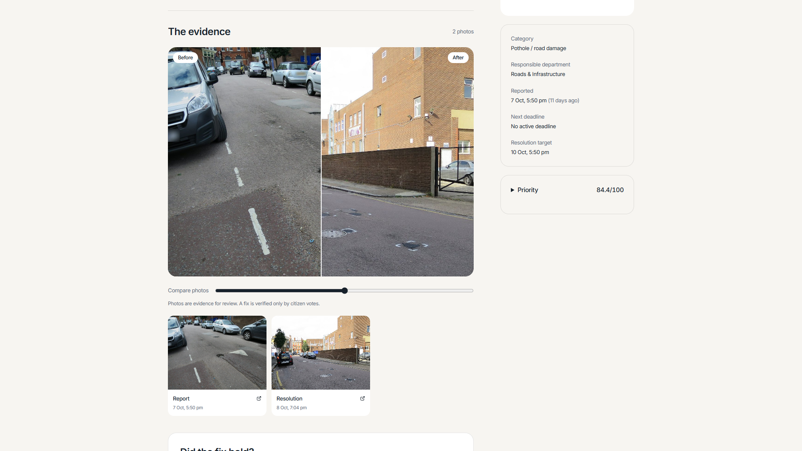
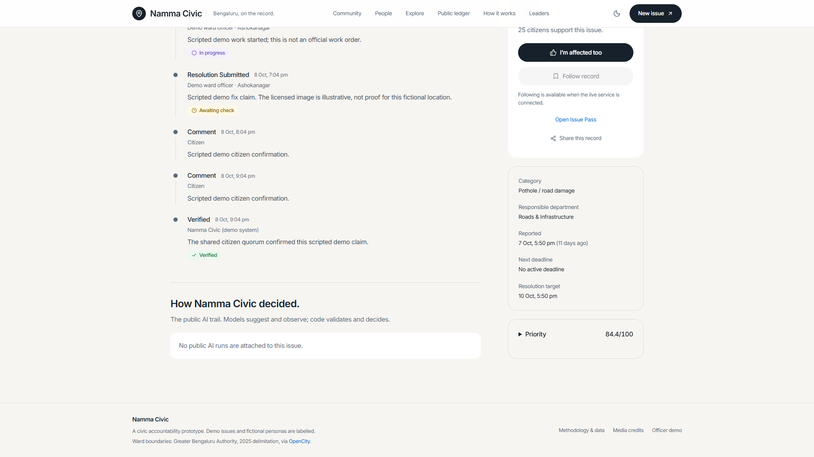
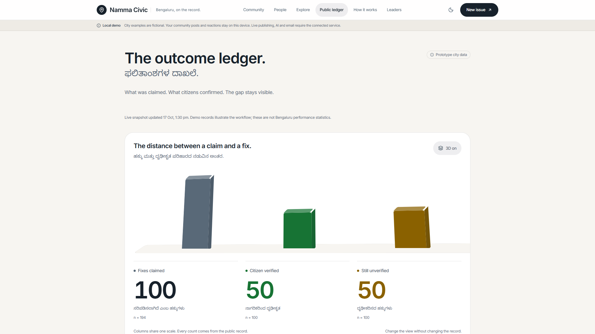

03 · Accountability
Claimed is different from verified.

Inspect the evidence.

Read the citizen verdict.

See what the record proves.
Earlier Vercel captures · 18 Oct 2026 · Fictional histories and totals · Read-only inspection